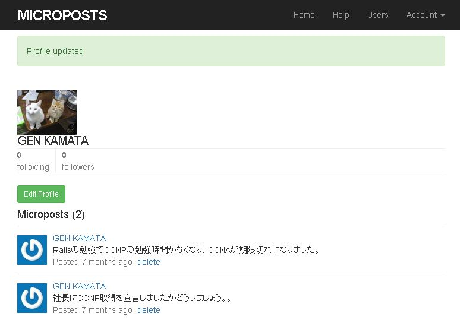
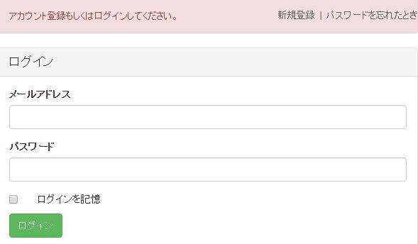

メッセージボード
概要
生まれて初めて作成したアプリケーションです。 Railsを利用することで、データベースへのアクセスや、HTMLの描画、などを少ないコードで実現できました。 ソースコードは、GitHubにリモートリポジトリを作成してアップロードしています。 また、Bootstrapを使って素早く見栄えを整えました。 アプリケーションはHerokuの無料プランで動かしています。 長期間アクセスがないと眠ってしまって、なかなかアクセスできません。。

Twitterクローン
概要
宇佐美SLから薦められ、Ryby on Rails チュートリアル：実例を使ってRailsを学ぼう を実践しました。ほぼチュートリアルのとおり実装できましたが、herokuには画像データを保存できない為、プロフィール の画像はアップロードしてもしばらく時間が経つと消えてしまいます。このチュートリアルは何度かやってみても勉強になります。

画像投稿アプリ
概要
herokuには画像データを保存できないと知り、AWSのS3を使って画像データを保存する事にしました。 中途半端な作りかけですが、体調と相談しながらが完成させたいと思います。
